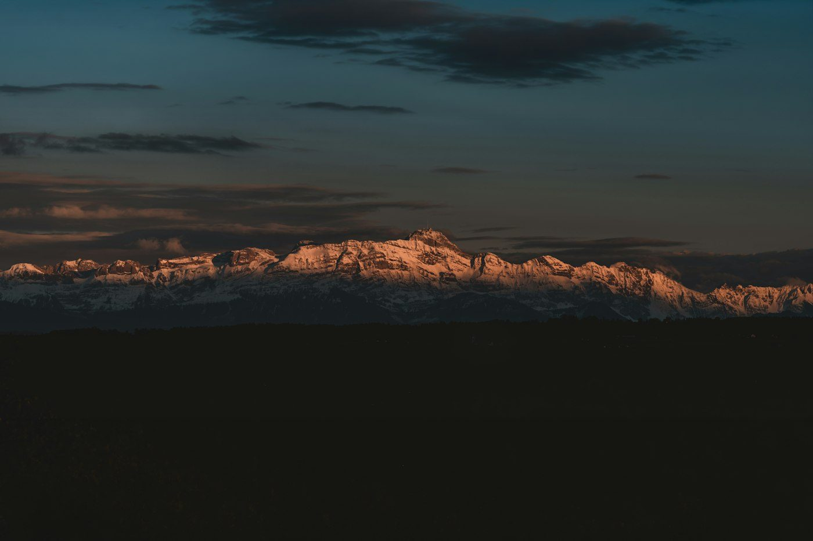
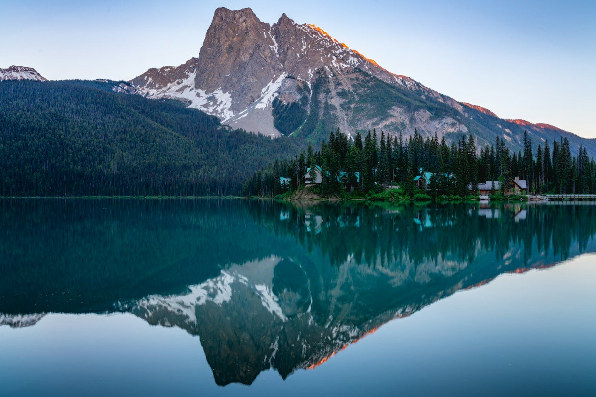
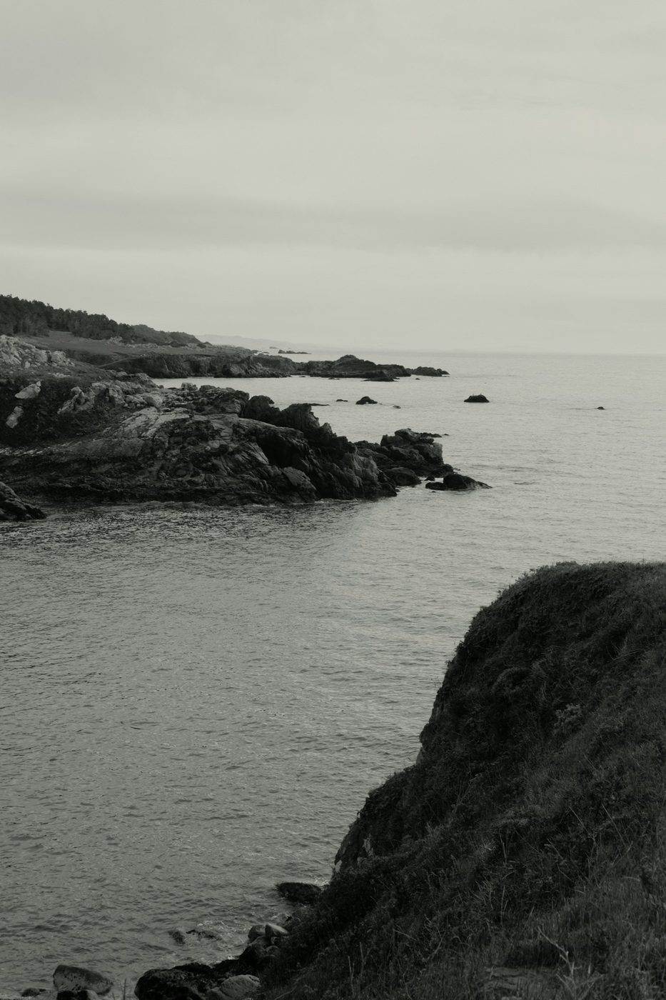
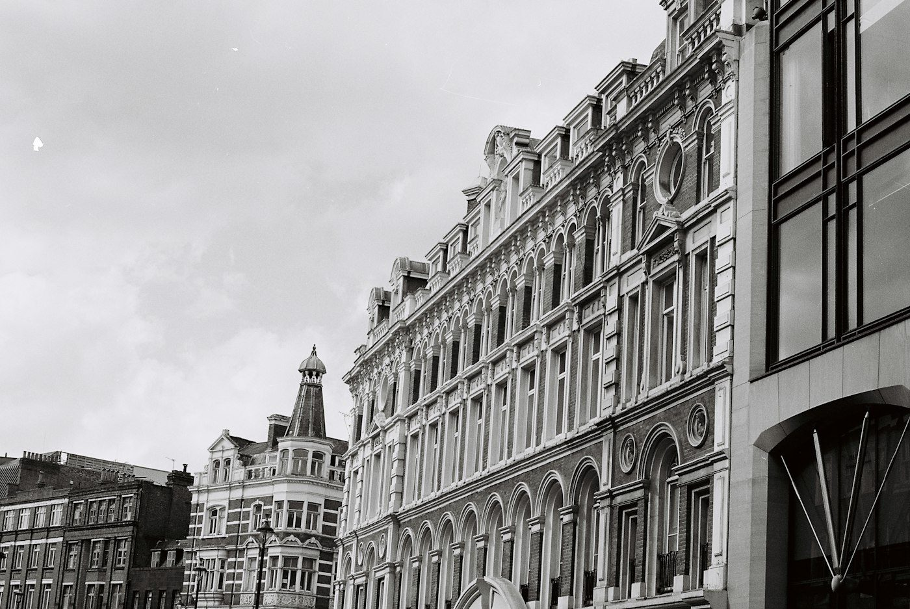

01Higher ground
Into the mountains
Follow the ridgeline. Look for the small details that give a vast landscape its scale.
A visual travel journal
Quiet landscapes. Unfamiliar streets. A collection of places worth slowing down for.
Explore the collectionCOLLECTION 01 / OUT IN THE OPEN

A change of scenery

01Higher ground
Follow the ridgeline. Look for the small details that give a vast landscape its scale.

02By the water
An open horizon and a slower rhythm. A closer look at the meeting point of land and sea.

03Between buildings
Trade a fixed itinerary for a few unexpected turns. Find the shapes hiding in everyday streets.
The contact sheet
A small collection of different perspectives.
Select a
photograph for a closer look.
A curated study collection. Original photographers and image sources are listed in the photo credits.